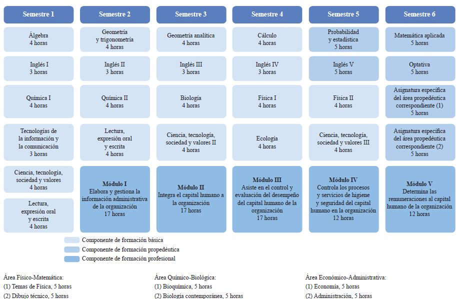
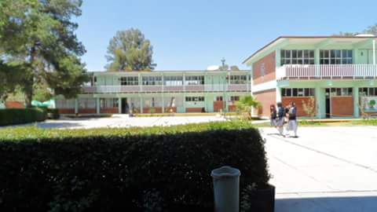
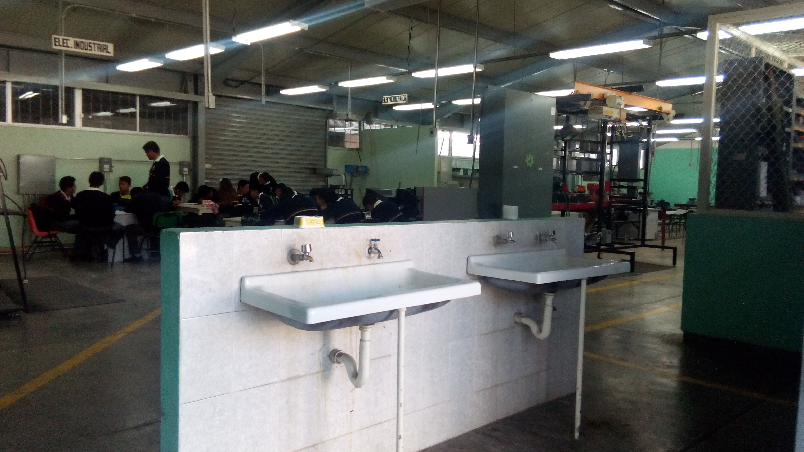
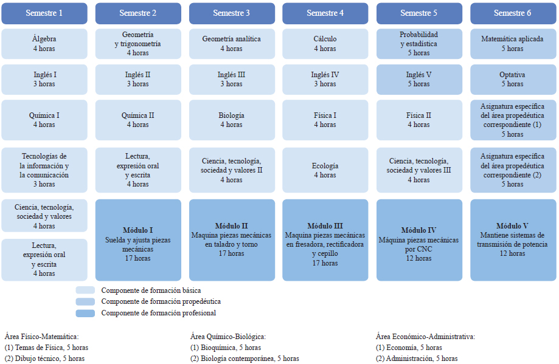
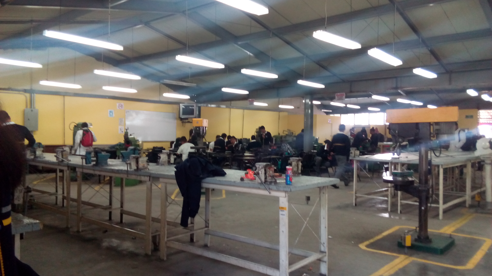

Especialidades
TÉCNICO EN ADMINISTRACIÓN DE RECURSOS HUMANOS
Elabora y gestiona documentación administrativa referente a recursos humanos, integra al personal a la organización, asiste en actividades de capacitación, desarrollo y evaluación del personal, así como determina las remuneraciones al personal.
COMPETENCIAS PROFESIONALES

MAPA CURRICULAR
Instalaciones
PERFIL DE EGRESO
Durante el proceso de formación de los cinco módulos, el estudiante desarrollará o reforzará las siguientes competencias profesionales, correspondientes al Técnico en Administración de Recursos Humanos:
- Elabora y gestiona la información de la organización.
- Integra el capital humano a la organización.
- Asiste en el control y evaluación del desempeño del capital humano de la organización.
- Controla los procesos y servicios de higiene y seguridad del capital humano en la organización.
- Determina las remuneraciones al capital humano de la organización.
OPORTUNIDADES DE INSERCIÓN LABORAL.
- Auxiliar de información interna y externa.
- Auxiliar de control de personal.
- Asistente de gerente de recursos humanos.
- Auxiliar de personal.
- Servicios de administración de negocios, servicios de traducción e interpretación.
TÉCNICO EN ELECTRICIDAD
La carrera de Técnico en Electricidad permite al estudiante sustentar la demanda de ocupación de Técnicos Electricistas en el sector productivo y de servicios, capaz de diseñar y realizar instalaciones eléctricas residenciales y comerciales, así como proporcionar mantenimiento a máquinas eléctricas.
COMPETENCIAS PROFESIONALES

MAPA CURRICULAR

Instalaciones
PERFIL DE EGRESO
Durante el proceso de formación de los cinco módulos, el estudiante desarrollará o reforzará las siguientes competencias profesionales, correspondientes al Técnico en Electricidad:
- Desarrolla instalaciones eléctricas residenciales y comerciales.
- Mantiene los motores y generadores de CA y CC.
- Mantiene en operación los circuitos de control electromagnético y electrónico.
- Mantiene los sistemas de iluminación y de energía renovable.
- Mantiene instalaciones eléctricas de media y baja tensión.
OPORTUNIDADES DE INSERCIÓN LABORAL.
- Todas estas competencias posibilitan al egresado su incorporación al mundo laboral o desarrollar procesos productivos independientes, de acuerdo con sus intereses profesionales o las necesidades en su entorno social.
TÉCNICO EN MECÁNICA INDUSTRIAL
Profesionista que da mantenimiento a los sistemas de transmisión de potencia utilizando las máquinas herramientas convencionales, de control numérico, máquinas de soldar con arco eléctrico y oxigas auxiliándose de los procesos de ajuste de piezas mecánicas.
COMPETENCIAS PROFESIONALES

MAPA CURRICULAR
Instalaciones
PERFIL DE EGRESO
Durante el proceso de formación de los cinco módulos, el estudiante desarrollará o reforzará las siguientes competencias profesionales, correspondientes al Técnico en Mecánica Industrial:
- Suelda y ajusta piezas mecánicas.
- Maquina piezas mecánicas en talador y torno.
- Maquina piezas mecánicas en fresadora, rectificadora y cepillo.
- Maquina piezas mecánicas por CNC.
- Mantiene sistemas de transmisión de potencia.
OPORTUNIDADES DE INSERCIÓN LABORAL.
- Todo tipo de industria de la producción y manufacturera que utilice maquinaria
TÉCNICO EN PROGRAMACIÓN
Persona con conocimientos, habilidades y actitudes, capaz de ingresar a empresas de desarrollo de software, diseño gráfico, mantenimiento, outsourcing.
COMPETENCIAS PROFESIONALES

MAPA CURRICULAR

Instalaciones
PERFIL DE EGRESO
La formación que ofrece la carrera de Técnico en programación permite al egresado, a través de la articulación de saberes de diversos campos, realizar actividades dirigidas a la:
- Instalación y desarrollo de software de aplicación utilizando programación estructurada y orientada a objetos en ambientes web y móviles, con almacenamiento persistente de datos.
- Configuración y administración de plataforma e-learning y Comercio electrónico./li>
OPORTUNIDADES DE INSERCIÓN LABORAL.
- Desarrolladores de software
- Analistas de sistemas
- Analista de programas de cómputo
- Programador de sistemas de cómputo
- Edición de software y edición de software integrada con la reproducción
- Escuelas de computación del sector privado
- Servicios de diseño de sistemas de cómputo y servicios relacionados
- Escuelas de computación del sector público